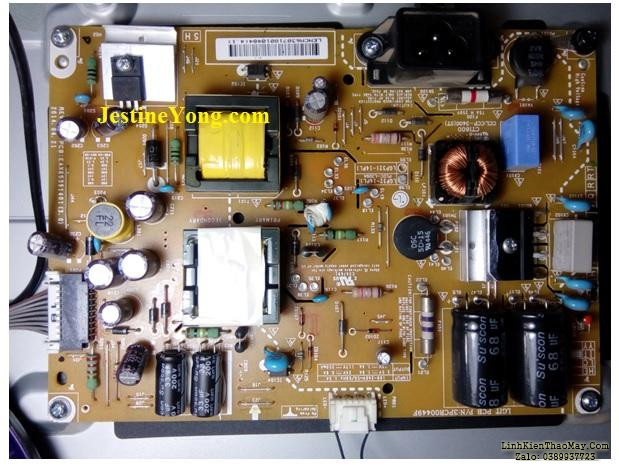
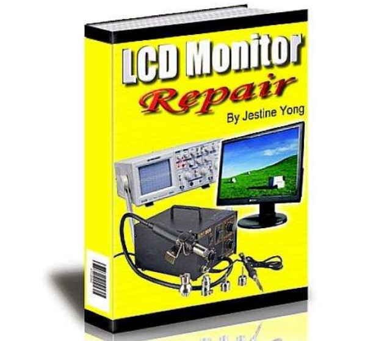
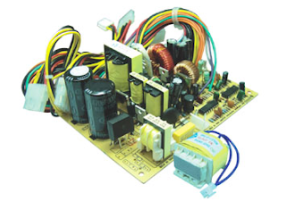
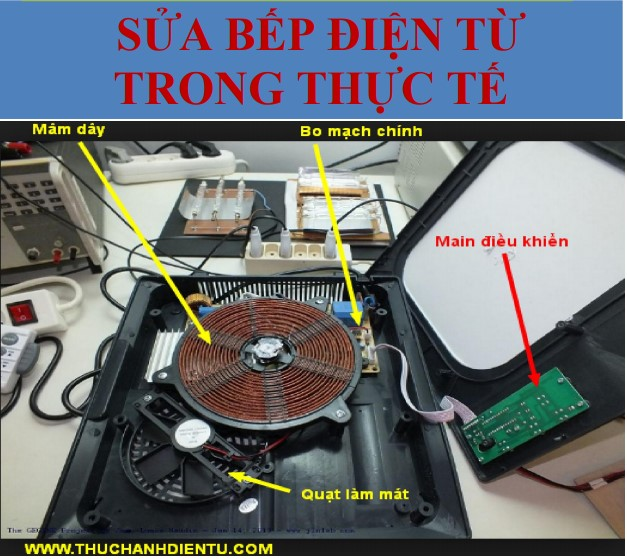

Tổng hợp Pan bệnh TV LCD và cách sửa thực tế
Tài liệu tổng hợp các Pan bệnh TV LCD và cách sửa thực tế (Tác giả: Jestine Young, bản dịch tiếng Việt).

Sửa chữa LED/LCD, T-CON & Panel
Tài liệu Sửa chữa LED/LCD, T-Con & Panel (Bản dịch tiếng Việt, tài liệu hiếm).

Tài liệu sửa chữa màn hình LCD - Tiếng Việt
Tài liệu hướng dẫn kiểm tra và sửa chữa màn hình LCD (Bản dịch tiếng Việt).

Nguồn ATX toàn tập
Giáo trình phân tích nguyên lý và sửa chữa tổng hợp nguồn máy tính ATX (Tác giả: lqv77).

Giáo trình Sửa Bếp Từ
Sách scan - Giáo trình phân tích mạch và sửa chữa Bếp Từ (bachkhoadientu NVT).